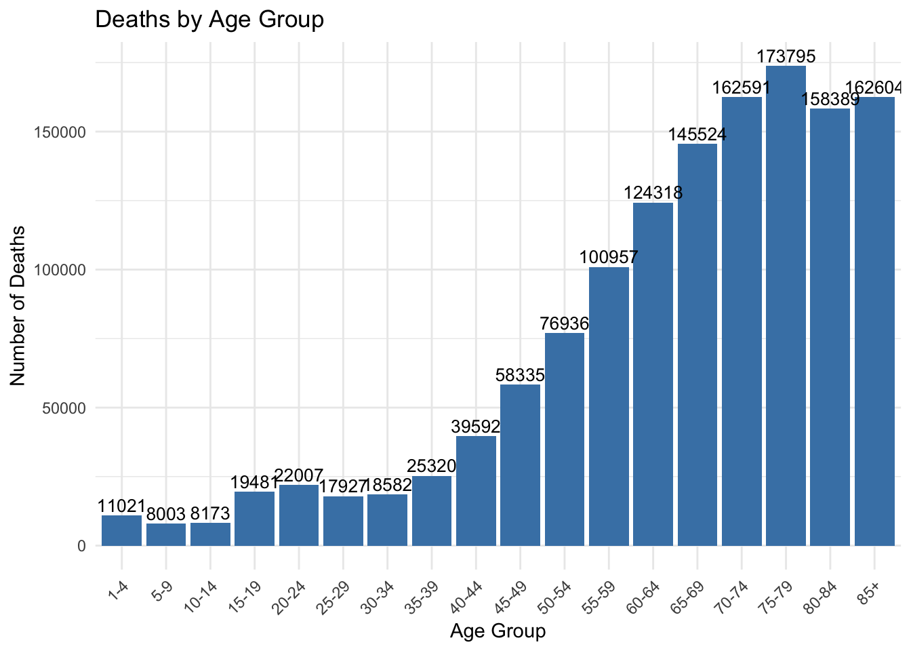
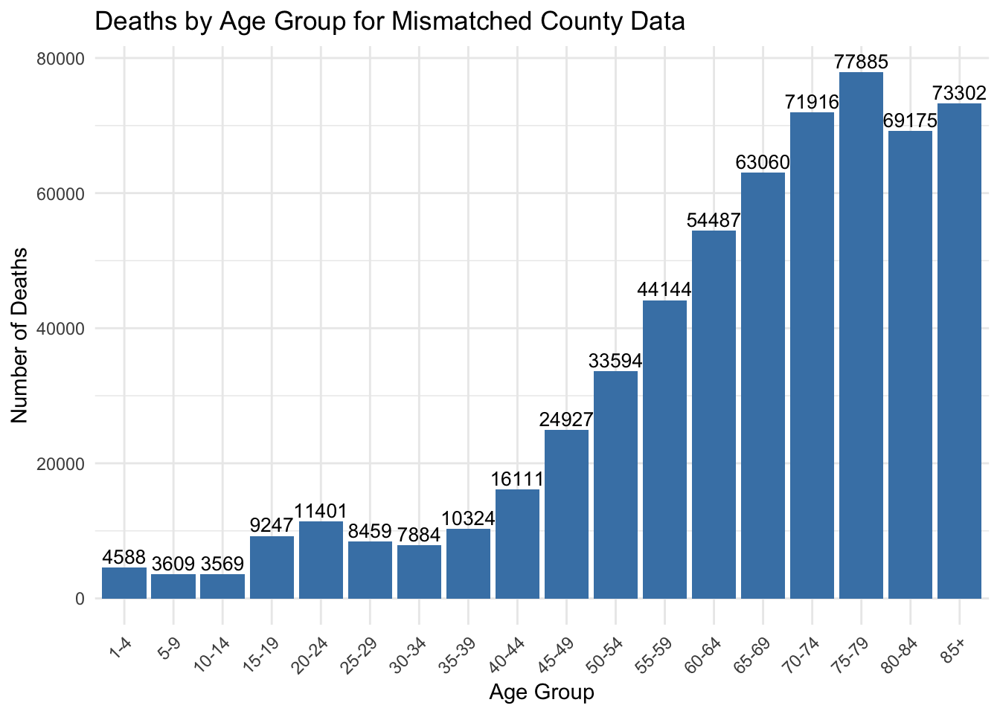
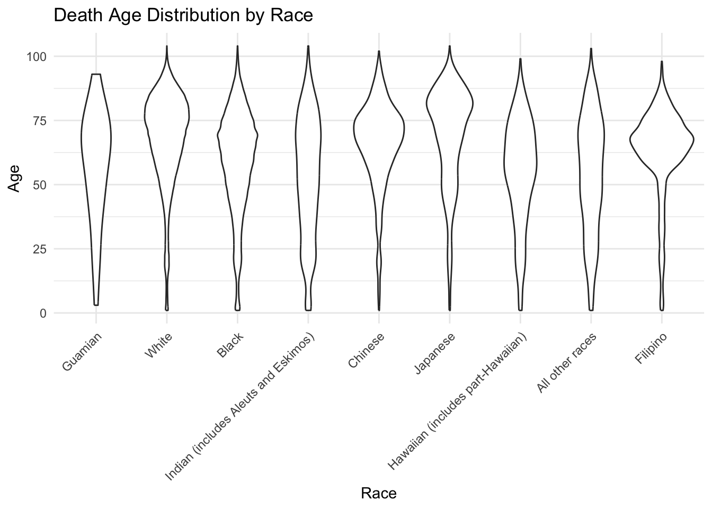
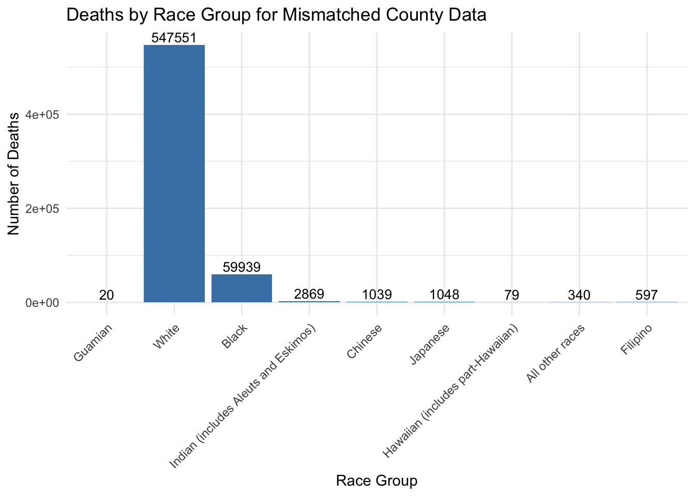

Columbia University, Mailman School of Public Health
Published
May 30, 2024
Introduction
I have selected ucod as Cause, Month, Sex, Age, countyoc as Fips from the raw data set, and summarized records of deaths with the same conditions. All the records in this data set are drawn from 1970.
Summary data
Whole Dataset
library(dplyr)
Attaching package: 'dplyr'
The following objects are masked from 'package:stats':
filter, lag
The following objects are masked from 'package:base':
intersect, setdiff, setequal, union
Because a single age value is not as informative as an age group in statistics, ages are grouped. Due to missing data, some of the records are clearly older than is possible, and if we set the upper age limit to 105, the aggregated result would be:
All the analysis below is based on this cleaned dataset.
County Mismatch Records
Based on the table above, I counted the records whose county of residence and county of occurrence are different and calculated the proportion of the inconsistencies with all else being the same. The mismatch ratio shows as below.
From the table above, we can see that cause of death does not significantly affect the inconsistency between residence and place of death, but we might want to look at causes of death with code 174 in the future.
Considering Age
Whole Dataset
summary_agegroup_new <- summary_agegroup %>%group_by(age) %>%summarise(deaths =n(), .groups ='drop')ggplot(summary_agegroup_new, aes(x = age, y = deaths)) +geom_col(fill ="steelblue") +geom_text(aes(label = deaths), vjust =-0.3, color ="black", size =3.5) +labs(title ="Deaths by Age Group",x ="Age Group",y ="Number of Deaths") +theme_minimal() +theme(axis.text.x =element_text(angle =45, hjust =1))

County Mismatch Records
We will use clean data to analyze this part.
mismatch_age <- data_byage %>%filter(countyoc != countyrs) %>%group_by(age) %>%summarise(deaths =n(), .groups ='drop')ggplot(mismatch_age, aes(x = age, y = deaths)) +geom_col(fill ="steelblue") +geom_text(aes(label = deaths), vjust =-0.3, color ="black", size =3.5) +labs(title ="Deaths by Age Group for Mismatched County Data",x ="Age Group",y ="Number of Deaths") +theme_minimal() +theme(axis.text.x =element_text(angle =45, hjust =1))

It seems that both the total death records and the mismatched deaths records reach the peak between the ages of 75 and 79. For those mismatched deaths, before the age of 75, the cases of discordance between the place of death and the place of residence increased with the increase of age, and showed a decreasing trend after the age of 75, which may be related to the weakened mobility of the elderly.
# A tibble: 9 × 2
race mean_age
<fct> <dbl>
1 Guamian 57.4
2 White 67.7
3 Black 59.0
4 Indian (includes Aleuts and Eskimos) 52.8
5 Chinese 65.6
6 Japanese 68.5
7 Hawaiian (includes part-Hawaiian) 54.5
8 All other races 53.4
9 Filipino 62.7
ggplot(summary_race, aes(x =factor(race), y = age)) +geom_violin() +scale_x_discrete(labels = race_labels) +labs(title ="Death Age Distribution by Race",x ="Race",y ="Age") +theme_minimal() +theme(axis.text.x =element_text(angle =45, hjust =1))

The White, Chinese, Japanese seem to have similar distribution with different means. The Japanese has the highest mean of death age, which is 68.51403 years.
County Mismatch Records
mismatch_race <- data %>%filter(countyoc != countyrs) %>%mutate(race =factor(race, levels =0:8, labels = race_labels)) %>%group_by(race) %>%summarise(deaths =n(), .groups ='drop')ggplot(mismatch_race, aes(x = race, y = deaths)) +geom_col(fill ="steelblue") +geom_text(aes(label = deaths), vjust =-0.3, color ="black", size =3.5) +labs(title ="Deaths by Race Group for Mismatched County Data",x ="Race Group",y ="Number of Deaths") +theme_minimal() +theme(axis.text.x =element_text(angle =45, hjust =1))

The mismatched records mainly in the White and Black group, I think it has something to do with the demographics of 1970, the fact that there were more whites and blacks, and that Asians tended to stick together in fixed communities, probably reducing their likelihood of dying outside of the county they lived.